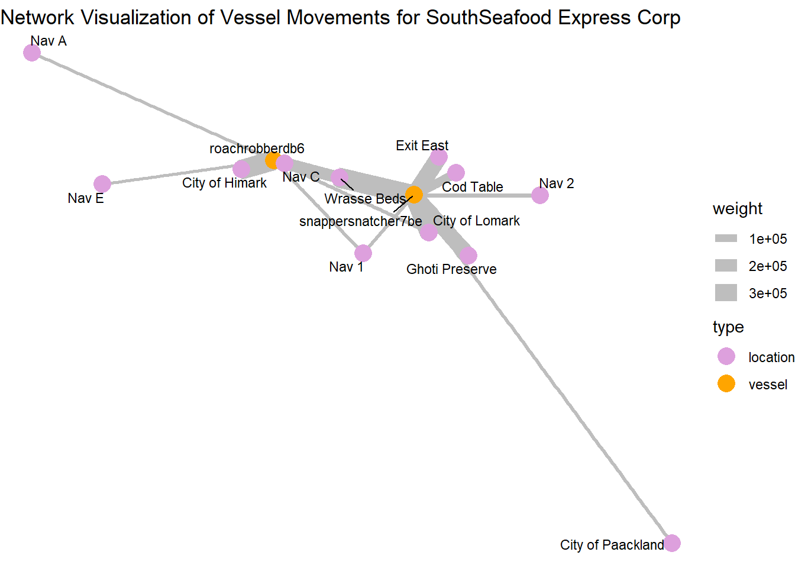

# Load necessary R packages using pacman
pacman::p_load(
# Spatial Data
sf, lwgeom, units, maps,
# Data Manipulation
dplyr, tidyverse, lubridate, jsonlite, httr,
# Visualization
ggplot2, tmap, leaflet, viridis, plotly, ggraph, gganimate, gifski, ggrepel,
# Network Analysis
igraph, tidygraph, visNetwork, graphlayouts
)Investigations
1.1 Loading R Packages
1.2 Loading the Data
Loading the mc2 json data which is a directed multigraph consisting of nodes containing entities and edges containing relationships
json_data <- fromJSON("data/mc2.json")In this section, we will prepare our links dataset
Show the code
links_df <- as_tibble(json_data$links) %>%
distinct() %>%
mutate(source = as.character(source),
target = as.character(target),
type = as.character(type),
date = date,
time = as.POSIXct(time, format="%Y-%m-%dT%H:%M:%OS", tz="UTC"),
ping_date = as.Date(as.POSIXct(time, format="%Y-%m-%dT%H:%M:%OS", tz="UTC"))) %>%
select(type, time, dwell, source, target, date, ping_date)
mc2_links <- links_df%>%
group_by(source, target, type) %>%
summarise(weights = n(), .groups = 'drop') %>%
filter(source != target) %>%
ungroup()
glimpse(links_df)Rows: 271,643
Columns: 7
$ type <chr> "Event.TransportEvent.TransponderPing", "Event.TransportEven…
$ time <dttm> 2035-09-16 04:06:48, 2035-09-20 05:21:33, 2035-09-28 04:31:…
$ dwell <dbl> 115074.79, 412706.32, 286092.88, 327623.95, 243225.35, 10956…
$ source <chr> "City of Haacklee", "City of Haacklee", "City of Haacklee", …
$ target <chr> "perchplundererbc0", "perchplundererbc0", "perchplundererbc0…
$ date <chr> NA, NA, NA, NA, NA, NA, NA, NA, NA, NA, NA, NA, NA, NA, NA, …
$ ping_date <date> 2035-09-16, 2035-09-20, 2035-09-28, 2035-10-04, 2035-10-15,…In this section, we will prepare our nodes dataset
Show the code
# Convert nodes to tibble, modify variable types, and select required columns
nodes_df <- as_tibble(json_data$nodes) %>%
mutate(
type_original = type,
id = as.character(id),
type = as.character(type),
type = case_when(
type %in% c("Entity.Vessel.CargoVessel", "Entity.Vessel.Ferry.Cargo", "Entity.Vessel.FishingVessel") ~ "Entity.Vessel",
TRUE ~ type
),
tonnage = as.numeric(as.character(tonnage)),
length_overall = as.numeric(as.character(length_overall)),
Activities = as.character(Activities),
fish_species_present,
kind = as.character(kind),
flag_country = as.character(flag_country),
company = as.character(company),
name = as.character(name),
Name = as.character(Name)) %>%
select(id, date, type,type_original, qty_tons, name, Name, company, flag_country, Activities, tonnage, length_overall, fish_species_present, kind)
glimpse(nodes_df)Rows: 5,637
Columns: 14
$ id <chr> "gadusnspecificatae4ba", "piscesfrigus900", "pisc…
$ date <chr> NA, NA, NA, NA, NA, NA, NA, NA, NA, NA, NA, NA, N…
$ type <chr> "Entity.Commodity.Fish", "Entity.Commodity.Fish",…
$ type_original <chr> "Entity.Commodity.Fish", "Entity.Commodity.Fish",…
$ qty_tons <dbl> NA, NA, NA, NA, NA, NA, NA, NA, NA, NA, NA, NA, N…
$ name <chr> "Cod/Gadus n.specificatae", "Birdseye/Pisces frig…
$ Name <chr> NA, NA, NA, NA, NA, NA, NA, NA, NA, NA, "Haacklee…
$ company <chr> NA, NA, NA, NA, NA, NA, NA, NA, NA, NA, NA, NA, N…
$ flag_country <chr> NA, NA, NA, NA, NA, NA, NA, NA, NA, NA, NA, NA, N…
$ Activities <chr> "NULL", "NULL", "NULL", "NULL", "NULL", "NULL", "…
$ tonnage <dbl> NA, NA, NA, NA, NA, NA, NA, NA, NA, NA, NA, NA, N…
$ length_overall <dbl> NA, NA, NA, NA, NA, NA, NA, NA, NA, NA, NA, NA, N…
$ fish_species_present <list> <NULL>, <NULL>, <NULL>, <NULL>, <NULL>, <NULL>, …
$ kind <chr> NA, NA, NA, NA, NA, NA, NA, NA, NA, NA, "city", "…
Note
We save our processed data into .rds data format files using the write_rds() of readr package. The output file is saved in rds sub-folder. We do this to reduce the loading time and more importantly, we can avoid uploading the large raw files onto GitHub.
write_rds(links_df, "data/rds/links_df.rds")
links_df <- read_rds("data/rds/links_df.rds")
write_rds(mc2_links, "data/rds/mc2_links.rds")
mc2_links <- read_rds("data/rds/mc2_links.rds")
write_rds(nodes_df, "data/rds/nodes_df.rds")
nodes_df <- read_rds("data/rds/nodes_df.rds")In this section, we will extract out seperate datasets from our nodes and links datasets
vessels_df <- nodes_df %>%
filter(type == "Entity.Vessel") %>%
select(id, Name, company, flag_country, type) %>%
mutate(type = sub("Entity.Vessel.", "", type))
delivery_report_df <- nodes_df %>%
filter(type == "Entity.Document.DeliveryReport") %>%
rename(cargo_id = id)%>%
select(qty_tons,date,cargo_id)
fish_df <- nodes_df %>%
filter(type == "Entity.Commodity.Fish") %>%
rename(fish_name = name)
city_df <- nodes_df %>%
filter(type == "Entity.Location.City")%>%
rename(city_name = Name)
locations_df <- nodes_df %>%
filter(type == "Entity.Location.City"| type=="Entity.Location.Point"| type=="Entity.Location.Region") %>%
rename(location_name = Name)%>%
select(id,location_name)
harbor_report_df <- links_df %>%
filter(type == "Event.HarborReport") %>%
select(date,source,target)
transponder_ping_df <- links_df %>%
filter(type == "Event.TransportEvent.TransponderPing") %>%
select(time,dwell,source,target,ping_date)
transactions_df <- links_df %>%
filter(type == "Event.Transaction") %>%
select(date,source,target)
fishing_grounds_df <- nodes_df %>%
filter(kind == "Fishing Ground"|kind == "Ecological Preserve") %>%
select(id,Name,kind,fish_species_present)1.3. Data Cleaning
We discovered that the columns “type,” “source,” and “target” are complete, containing no missing values. Conversely, the columns “time,” “dwell,” “date,” and “ping_date” exhibit numerous missing values. This outcome is anticipated since these columns exclusively hold data for specific categories.
# Check for columns with missing values
colSums(is.na(links_df)) type time dwell source target date ping_date
0 13101 13101 0 0 258542 13101 Show the code
summary(links_df) type time dwell
Length:271643 Min. :2035-02-01 00:00:00.00 Min. : 0
Class :character 1st Qu.:2035-04-17 13:33:02.35 1st Qu.: 4695
Mode :character Median :2035-06-28 19:34:55.25 Median : 6287
Mean :2035-06-30 22:13:03.65 Mean : 19775
3rd Qu.:2035-09-13 13:44:34.00 3rd Qu.: 12101
Max. :2035-11-30 00:00:00.00 Max. :28735323
NA's :13101 NA's :13101
source target date ping_date
Length:271643 Length:271643 Length:271643 Min. :2035-02-01
Class :character Class :character Class :character 1st Qu.:2035-04-17
Mode :character Mode :character Mode :character Median :2035-06-28
Mean :2035-06-30
3rd Qu.:2035-09-13
Max. :2035-11-30
NA's :13101 Next, we ensure there are no duplicated rows
Show the code
links_df[duplicated(links_df),]# A tibble: 790 × 7
type time dwell source target date ping_date
<chr> <dttm> <dbl> <chr> <chr> <chr> <date>
1 Event.HarborReport NA NA wavewranglerc2d City … 2035… NA
2 Event.HarborReport NA NA wavewranglerc2d City … 2035… NA
3 Event.HarborReport NA NA wavewranglerc2d City … 2035… NA
4 Event.HarborReport NA NA wavewranglerc2d City … 2035… NA
5 Event.HarborReport NA NA wavewranglerc2d City … 2035… NA
6 Event.HarborReport NA NA wavewranglerc2d City … 2035… NA
7 Event.HarborReport NA NA yellowfintunataker08b City … 2035… NA
8 Event.HarborReport NA NA webigailba7 City … 2035… NA
9 Event.HarborReport NA NA webigailba7 City … 2035… NA
10 Event.HarborReport NA NA webigailba7 City … 2035… NA
# ℹ 780 more rowsLet’s try to understand how our links data is categorized into. It seems there are three categories of data as shown below.
Show the code
unique_type <- unique(links_df$type)
print(unique_type)Define a function to count and print unique categories for a given column.
Show the code
count_unique_categories <- function(data, column_name) {
cat("**", column_name, "**\n", sep = "")
category_counts <- table(data[[column_name]])
sorted_counts <- sort(category_counts, decreasing = TRUE)
print(sorted_counts)
}Let’s take a look into our nodes dataframe.
Show the code
glimpse(nodes_df)Rows: 5,637
Columns: 14
$ id <chr> "gadusnspecificatae4ba", "piscesfrigus900", "pisc…
$ date <chr> NA, NA, NA, NA, NA, NA, NA, NA, NA, NA, NA, NA, N…
$ type <chr> "Entity.Commodity.Fish", "Entity.Commodity.Fish",…
$ type_original <chr> "Entity.Commodity.Fish", "Entity.Commodity.Fish",…
$ qty_tons <dbl> NA, NA, NA, NA, NA, NA, NA, NA, NA, NA, NA, NA, N…
$ name <chr> "Cod/Gadus n.specificatae", "Birdseye/Pisces frig…
$ Name <chr> NA, NA, NA, NA, NA, NA, NA, NA, NA, NA, "Haacklee…
$ company <chr> NA, NA, NA, NA, NA, NA, NA, NA, NA, NA, NA, NA, N…
$ flag_country <chr> NA, NA, NA, NA, NA, NA, NA, NA, NA, NA, NA, NA, N…
$ Activities <chr> "NULL", "NULL", "NULL", "NULL", "NULL", "NULL", "…
$ tonnage <dbl> NA, NA, NA, NA, NA, NA, NA, NA, NA, NA, NA, NA, N…
$ length_overall <dbl> NA, NA, NA, NA, NA, NA, NA, NA, NA, NA, NA, NA, N…
$ fish_species_present <list> <NULL>, <NULL>, <NULL>, <NULL>, <NULL>, <NULL>, …
$ kind <chr> NA, NA, NA, NA, NA, NA, NA, NA, NA, NA, "city", "…Again, it’s hard to make sense if these missing values are actually important due ot the nature of the data. We shall handle it as it goes. However, the main columns we are interested in id and type are not missing any data.
Show the code
# Check for columns with missing values
colSums(is.na(nodes_df)) id date type
0 330 0
type_original qty_tons name
0 330 5627
Name company flag_country
5317 5458 5341
Activities tonnage length_overall
0 5359 5354
fish_species_present kind
0 5613 There does not seem to be any whole duplicate rows.
Show the code
nodes_df[duplicated(nodes_df),]# A tibble: 0 × 14
# ℹ 14 variables: id <chr>, date <chr>, type <chr>, type_original <chr>,
# qty_tons <dbl>, name <chr>, Name <chr>, company <chr>, flag_country <chr>,
# Activities <chr>, tonnage <dbl>, length_overall <dbl>,
# fish_species_present <list>, kind <chr>It seems we have many types of nodes even after grouping more of the Vessel types into our generic “Entity.Vessel”. It seems “Entity.Commodity.Fish”,‘Entity.Vessel’, ‘Entity.Location.Point’, ‘Entity.Location.City’, ‘Entity.Location.Region’ will be important for us.
Show the code
unique_type <- unique(nodes_df$type)
print(unique_type) [1] "Entity.Commodity.Fish" "Entity.Location.City"
[3] "Entity.Document.DeliveryReport" "Entity.Vessel"
[5] "Entity.Vessel.Other" "Entity.Vessel.Ferry.Passenger"
[7] "Entity.Vessel.Research" "Entity.Vessel.Tour"
[9] "Entity.Location.Point" "Entity.Location.Region" Show the code
count_unique_categories(nodes_df, 'type') **type**
Entity.Document.DeliveryReport Entity.Vessel
5307 280
Entity.Location.Point Entity.Commodity.Fish
12 10
Entity.Location.City Entity.Location.Region
6 6
Entity.Vessel.Tour Entity.Vessel.Other
6 5
Entity.Vessel.Ferry.Passenger Entity.Vessel.Research
3 2 Show the code
count_unique_categories(nodes_df, 'flag_country') **flag_country**
Oceanus Playa Solis Helixia Nyxonix Alverossia
177 5 4 4 3
Ariuzima Coralada Kethanor Lumindoria Orvietola
3 3 3 3 3
Utoparadia Uzifrica Valtalmo Anderia del Mar Azurionix
3 3 3 2 2
Calabrand Faraluna Gavanovia Isla Solmar Islavaria
2 2 2 2 2
Khamseena Kondarica Mawalara Merigrad Novarctica
2 2 2 2 2
Novarcticaa Osterivaro Rio Solovia Riodelsol Thessalandia
2 2 2 2 2
Utoporiana Uziland Zawalinda Afarivaria Alverovia
2 2 2 1 1
Arreciviento Arvaros Arvekalia Baziuzim Brindisola
1 1 1 1 1
Brindivaria Coralmarica Helvoris Icarnia Imazam
1 1 1 1 1
Islavaragon Kethilim Kilivaria Kondanovia Kondarivakia
1 1 1 1 1
Korvelonia Kuzalanda Lumakari Luminkind Mango del Oro
1 1 1 1 1
Marebak Marifada Myriadonia Nalakond Nalaloria
1 1 1 1 1
Oceanterra Puerto del Mar Sirenareef Solovarossa Solterrix
1 1 1 1 1
Syrithania Talandria Vesperlandia Vientoro Wysterion
1 1 1 1 1
Yggdrasonia Zambarka
1 1 Show the code
count_unique_categories(nodes_df, 'kind') **kind**
buoy city Ecological Preserve Fishing Ground
12 6 3 3 There are 100 companies found in our dataset
count_unique_companies <- length(unique(nodes_df$company))
count_unique_companies[1] 100The code below snippet employs the sf package to read and manipulate GeoJSON data. It uses st_read() to import the GeoJSON file and renames the column “Name” to “id” using rename() from the dplyr package.
Show the code
# Read the GeoJSON file
geojson_file <- "data/Oceanus Information/Oceanus Geography.geojson"
geo_data <- st_read(geojson_file) %>%
rename(id = Name)Reading layer `Oceanus Geography' from data source
`C:\weipengten\ISSS608-VAA-Project\Project\data\Oceanus Information\Oceanus Geography.geojson'
using driver `GeoJSON'
Simple feature collection with 29 features and 7 fields
Geometry type: GEOMETRY
Dimension: XY
Bounding box: xmin: -167.0654 ymin: 38.07452 xmax: -163.2723 ymax: 40.67775
Geodetic CRS: WGS 84Using tmap we create a basic plot of our locations we are interested in.
Show the code
# Visualize the geographical data with tmap
tmap_mode("plot")
tm_shape(geo_data) +
tm_polygons(alpha = 0.5) +
tm_borders(lwd = 1, alpha = 0.5) +
tm_layout(frame = FALSE) +
tmap_style("gray") +
tm_shape(geo_data) +
tm_dots(col = "purple", size = 0.2) +
tm_text(text = "id", size = 0.6, col = "black") + # Add labels to the locations
tm_layout(legend.position = c("left", "bottom"))
1.4 Processing fish locations data and visualizing
# Initial cleaning and splitting of fish species data
fishing_grounds_df <- fishing_grounds_df %>%
mutate(fish_species_present = gsub("c[(]", "", fish_species_present)) %>%
mutate(fish_species_present = gsub("\"", "", fish_species_present)) %>%
mutate(fish_species_present = gsub("[)]", "", fish_species_present)) %>%
mutate(fish_species_present = strsplit(as.character(fish_species_present), ",\\s*")) %>%
unnest(fish_species_present) %>%
rename(fishing_location = Name)
# Group by fish species and collect all unique locations into a list
final_fish_locations_df <- fishing_grounds_df %>%
group_by(fish_species_present) %>%
summarise(fishing_locations = list(unique(fishing_location)), .groups = 'drop')
ggplot(fishing_grounds_df, aes(x = fishing_location, y = fish_species_present, fill = kind)) +
geom_tile(color = "white") +
scale_fill_manual(values = c("Ecological Preserve" = "lightblue", "Fishing Ground" = "lightgreen")) +
labs(title = "Fish Distribution in Fishing Locations",
x = "Fishing Location",
y = "Fish Species",
fill = "Location Type") +
theme_minimal() + theme(panel.grid.major = element_blank(),
panel.grid.minor = element_blank())+
theme(axis.text.x = element_text(angle = 90, vjust = 0.25, hjust=0.25))
Plot above shows the locations in which various fish varieties are found. Fishing is supposed to be done only in the designated fishing grounds and not in ecological preserves
Insights: There are some fishes like Sockfish/Pisces foetida,Helenaa/Pisces satis, Offidiaa/Piscis osseus which are found only in ecological preserves. So tracking fishing of these varieties can give leads to illegal fishing happening.
1.5 Processing transactions,harbor report and delivery report data
# Convert date columns to Date type
transactions_df$date <- as.Date(transactions_df$date)
harbor_report_df$date <- as.Date(harbor_report_df$date)
delivery_report_df$date <- as.Date(delivery_report_df$date)
# Performing the inner join to pick only fishing or cargo vessels
harbor_report_df <- inner_join(harbor_report_df, vessels_df, by = c("source" = "id")) %>%
rename(
vessel_name = Name,
vessel_company = company,
vessel_id=source,
city=target,
vessel_type=type
) %>%
select(date,vessel_id,city,vessel_name,vessel_type,vessel_company,flag_country)
transponder_ping_df <- inner_join(transponder_ping_df, vessels_df, by = c("target" = "id"))%>%
rename(
location = source,
vessel_id = target,
vessel_name = Name,
vessel_company = company,
vessel_type=type
) %>%
select(time,ping_date,dwell, location,vessel_id,vessel_name,vessel_type,vessel_company,flag_country)
# Group by date, vessel_id, and city, and sum up dwell time
transponder_ping_day_sum_df <- transponder_ping_df %>%
group_by(ping_date, vessel_id, location,vessel_name,vessel_type,vessel_company) %>%
summarise(total_dwell_time = sum(dwell, na.rm = TRUE), .groups = 'drop') %>%
# Add filter to exclude records where total_dwell_time is 0
filter(total_dwell_time != 0)
transponder_ping_city_df <- transponder_ping_day_sum_df %>%
filter(grepl("^City", location))
transponder_ping_non_city_df <- transponder_ping_day_sum_df %>%
filter(!grepl("^City", location))
transponder_ping_south_df <- transponder_ping_day_sum_df %>%
filter(grepl("^SouthSeafood Express Corp", vessel_company))
# preparing transactions
transactions_df<-transactions_df%>% rename(cargo_id = source)
#pivot fish and city as columns
city_and_fish_df <- bind_rows(city_df, fish_df)
transactions_type <- transactions_df %>%
left_join(city_and_fish_df, by = c("target" = "id")) %>%
select(date.x, cargo_id, target, type)
transactions_cargo <- transactions_type %>%
pivot_wider(names_from = type, values_from = target, id_cols = c(date.x, cargo_id))%>%
rename(
date=date.x,
fish = Entity.Commodity.Fish,
city = Entity.Location.City
)
transactions_cargo <- transactions_cargo %>%
left_join(fish_df, by = c("fish" = "id")) %>%
select(date.x, cargo_id, fish, city,fish_name)%>%
rename(date_of_arrival=date.x,
city_of_arrival=city,
fish_in_cargo=fish
)
transactions_cargo <- transactions_cargo %>%
left_join(delivery_report_df, by = c("cargo_id"="cargo_id","date_of_arrival" = "date")) %>%
select(date_of_arrival,cargo_id, fish_in_cargo, city_of_arrival,fish_name,qty_tons)2. EDA
2.1 Exploring outlier data
iqr_qty <- IQR(transactions_cargo$qty_tons)
upper_bound <- quantile(transactions_cargo$qty_tons, 0.75) + 1.5 * iqr_qty
outliers <- transactions_cargo[transactions_cargo$qty_tons > upper_bound, ]
# Create a histogram
hist(transactions_cargo$qty_tons)
# Add outliers as points
points(transactions_cargo$qty_tons[transactions_cargo$qty_tons > upper_bound],
rep(0, sum(transactions_cargo$qty_tons > upper_bound)),
col = "red", pch = 16)
Insight : Anomaly qty_tons are mostly greater than 70 tons
2.2 Plotting fish arrivals over time
monthly_data <- transactions_cargo %>%
mutate(month = format(date_of_arrival, "%Y-%m"))
# Convert month to Date type for proper ordering in ggplot2
monthly_data$month <- as.Date(paste0(monthly_data$month, "-01"))
# Group by month and fish_name, and summarize total quantity in tons
monthly_data <- monthly_data %>%
group_by(month, fish_name) %>%
summarize(total_qty = sum(qty_tons)) %>%
ungroup()
# Plot the data
p <- ggplot(monthly_data, aes(x = month, y = total_qty, color = fish_name, group = fish_name)) +
geom_line() +
labs(title = "Monthly Fish Transactions", x = "Month", y = "Quantity in Tons")
ggplotly(p)Insights:
- Huge increase in Cod arrivals starting from July. This can be investigated for illegal fishing exceeding allowed limits.
- There are Salmon cargoes arriving,but cant attribute salmon to fishing grounds or ecological preserves. So it might be unregulated fishing from locations where fishing is not supposed to be done.
- Protected species ( Sockfish/Pisces foetida,Helenaa/Pisces satis, Offidiaa/Piscis osseus ) are arriving in cargo and need to be explored
2.3 Plotting protected fish quantities arriving at each city over time
city_time_analysis <- transactions_cargo %>%
mutate(month_of_arrival = format(date_of_arrival, "%Y-%m"))
# Convert month to Date type for proper ordering in ggplot2
city_time_analysis$month_of_arrival <- as.Date(paste0(city_time_analysis$month_of_arrival, "-01"))
# Group by month and fish_name, and summarize total quantity in tons
city_time_analysis <- city_time_analysis %>%
group_by(month_of_arrival,city_of_arrival,fish_name) %>%
summarize(total_qty = sum(qty_tons)) %>%
ungroup()
# Example endangered fish list
endangered_fish <- c(" Helenaa/Pisces satis", "Offidiaa/Piscis osseus","Sockfish/Pisces foetida")
# Generate a color palette, highlighting endangered species
fish_colors <- ifelse(city_time_analysis$fish_name %in% endangered_fish, "red", "grey") # This creates a vector of 'red' or 'grey'
unique_fish <- unique(city_time_analysis$fish_name)
colors <- setNames(ifelse(unique_fish %in% endangered_fish, "red", "grey"), unique_fish)
# Add a custom color scale to the plot
p <- ggplot(city_time_analysis, aes(x = month_of_arrival, y = total_qty, fill = fish_name)) +
geom_bar(stat = "identity", position = "stack") +
scale_fill_manual(values = colors) +
facet_wrap(~ city_of_arrival, scales = "free_y") +
labs(title = "Fish Arrivals by City Over Time", subtitle = "Red highlights endangered species",
x = "Month of Arrival", y = "Total Quantity in Tons") +
theme(axis.text.x = element_text(angle = 45, hjust = 1),
legend.title = element_text(face = "bold"))
# Convert to an interactive plotly plot
interactive_plot <- ggplotly(p)
interactive_plot <- interactive_plot %>%
layout(
hoverlabel = list(bgcolor = "white"),
hoverinfo = "text",
tooltip = c("month_of_arrival", "qty_tons", "fish_name")
)
interactive_plot3.2 Plotting fish quantities arriving at each city over time
# Aggregate quantity by city, fish type, and month of arrival (assuming you have a date_of_arrival column)
city_time_analysis <- transactions_cargo %>%
mutate(month_of_arrival = lubridate::floor_date(date_of_arrival, "month")) %>%
group_by(city_of_arrival, fish_name, month_of_arrival) %>%
summarize(qty_tons = sum(qty_tons), .groups = 'drop')
# Plot with ggplot2
p <- ggplot(city_time_analysis, aes(x = month_of_arrival, y = qty_tons, fill = fish_name)) +
geom_bar(stat = "identity", position = "stack") +
facet_wrap(~ city_of_arrival, scales = "free_y") +
labs(title = "Fish Arrivals by City Over Time", x = "Month of Arrival", y = "Total Quantity in Tons") +
theme(axis.text.x = element_text(angle = 45, hjust = 1))
# Convert to an interactive plotly plot
ggplotly(p)Insights:
- Cod arrival increased significantly in Paackland,South Paackland and Lomark from July
- Significant consistent increase in Wrasse arrivals in Himark
- Sockfish arrived significantly in Hacklee and Himark in November
- Offidiaa arrived significantly in Paackland in November
4. Exploring activities of SouthSeafood Express Corp
4.1 Plotting Monthly Dwell time of vessels belonging to SouthSeafood Express Corp
# Aggregate dwell time by month, city, and vessel_id
dwell_time_by_month_city_vessel <- transponder_ping_df %>%
filter(vessel_company == "SouthSeafood Express Corp") %>%
mutate(month = format(ping_date, "%Y-%m")) %>%
group_by(month, location, vessel_id) %>%
summarise(monthly_dwell_time = sum(dwell), .groups = 'drop')
# Plotting with faceting by vessel_id
p2 <- ggplot(dwell_time_by_month_city_vessel, aes(y = month, x = monthly_dwell_time, fill = location)) +
geom_bar(stat = "identity", position = "dodge") +
facet_wrap(~vessel_id, scales = "free_y") + # Free scales can be set if necessary
labs(title = "Monthly Dwell Time by City for Company A, by Vessel",
y = "Month",
x = "Dwell Time") +
theme_minimal() +
theme(legend.position = "bottom",axis.text.x = element_text(angle = 90, hjust = 1),
strip.text.x = element_text(angle = 0, hjust = 0.5, size = 8)) # Adjust strip text for better readability
ggplotly(p2)Insights:
SouthSeafood Express Corp seems to have been caught in the month of May as transponder pings stops at May
Vessel snappersnatcher7be seems to have spent considerable time in ecological preserve ‘ghoti preserve’ in april and in wrasse beds in april. The common fish present in both locations in Wrasse.
4.2 Heatmap of dwell time
ggplot(transponder_ping_south_df, aes(x = ping_date, y = location, fill = total_dwell_time)) +
geom_tile(color = "white") + # Adds borders to each tile
scale_fill_gradient(low = "lightblue", high = "darkblue", name = "Dwell Time") + # Color gradient
facet_wrap(~ vessel_id, ncol = 1, scales = "free_y")+
labs(title = "Heatmap of Vessel Location Dwell Times", x = "Date", y = "Location") +
theme_minimal() +
theme(
axis.text.x = element_text(angle = 90, hjust = 1), # Rotate date labels for clarity
axis.title = element_text(size = 12, face = "bold")
)
Insight:
Vessels seem to be spending time in exit east as well Himark and Lomark.
5. Deep dive into SouthSeafood Express Corp
6. Looking for similar patterns as SouthSeafood Express Corp
Now Lets investigate the arrival of piscisosseusb6d in City of Paackland in November

6.1 Top 10 vessels with highest Dwell time in Ghoti Preserve
Looking for dwell time in Ghoti Preserve, as piscisosseusb6d is only found in Ghoti Preserve and hence is a protected species.
# Specify hardcoded city and month
hardcoded_city <- "Ghoti Preserve"
selected_month <- "Nov"
# Extract year and month
transponder_ping_day_sum_df$year <- year(transponder_ping_day_sum_df$ping_date)
transponder_ping_day_sum_df$month <- month(transponder_ping_day_sum_df$ping_date, label = TRUE)
# Summarize total dwell time for each vessel in each city and month
monthly_summary_df <- transponder_ping_day_sum_df %>%
group_by(year, month, location, vessel_id, vessel_type,vessel_company) %>%
summarise(total_dwell_time = sum(total_dwell_time), .groups = 'drop') %>%
arrange(location, month)
# Filter to keep only top 5 vessels by dwell time for each city and month
top_vessels_df <- monthly_summary_df %>%
group_by(year, month, location) %>%
slice_max(order_by = total_dwell_time, n = 10, with_ties = FALSE)
# Filter the data for the hardcoded city and selected month
filtered_data <- top_vessels_df %>%
filter(location == hardcoded_city, month == selected_month) %>%
arrange(desc(total_dwell_time))
# Ensure only top 5 vessels are selected in case of any discrepancy
filtered_data <- head(filtered_data, 10)
# Create the Plotly plot
plot <- plot_ly(filtered_data, y = ~vessel_id, x = ~total_dwell_time, type = 'bar', orientation = 'h',
text = ~paste("Vessel ID:", vessel_id, "<br>Vessel Company:", vessel_company,"<br>vessel_type:", vessel_type),
hoverinfo = 'text') %>%
layout(title = paste("Top 10 Vessels in", hardcoded_city, "for", selected_month),
yaxis = list(title = "Vessel ID"),
xaxis = list(title = "Total Dwell Time (hours)"),
barmode = 'stack')
# Display the plot
plotInsights:
- brillbandit0a1,tunataker80c seems to be spending considerable amount of time in Ghoti preserve and is a suspect
7. Network analysis for SouthSeafood Express Corp
# Filter the dataframe for a specific company
transponder_ping_filtered_df <- transponder_ping_day_sum_df %>%
filter(vessel_company == "SouthSeafood Express Corp")
# Create edge list for the graph
# Here, 'from' represents the vessel, and 'to' represents the city (location)
edges_df <- data.frame(
from = transponder_ping_filtered_df$vessel_id,
to = transponder_ping_filtered_df$location,
weight = transponder_ping_filtered_df$total_dwell_time # Use dwell time as weight for edge thickness
)
# Create the graph object
graph <- graph_from_data_frame(edges_df, directed = FALSE)
# Define node types
V(graph)$type <- ifelse(V(graph)$name %in% transponder_ping_filtered_df$vessel_id, "vessel", "location")
# Visualize the network with ggraph
ggraph(graph, layout = 'fr') +
geom_edge_link(aes(edge_width = weight), edge_colour = "grey") + # Edge thickness based on dwell time
geom_node_point(aes(color = type), size = 5) +
geom_node_text(aes(label = name), repel = TRUE, size = 3, color = "black") +
scale_color_manual(values = c("vessel" = "orange", "location" = "plum")) +
theme_void() +
labs(title = "Network Visualization of Vessel Movements for SouthSeafood Express Corp")
Central and High-Activity Locations:
City of Himark and City of Lomark: These locations have multiple connections and thicker edges, indicating they are key hubs with significant vessel activity or prolonged stays.
Wrasse Beds and Ghoti Preserve: Similarly, these locations are prominent in terms of connections and might represent areas where they are performing illegal fishing
Locations with Thicker Edges: Locations like “Exit East” connected by thicker edges suggest that these are areas where vessels tend to stay longer, possibly for transshipment activities.
Paths and Connections: The arrangement of nodes and connections shows how vessels move from one location to another, which locations are frequently connected, and how dense the network is in specific regions.
The path plotting show how vessels move from one location to another and which locations are frequently connected
snappersnatcher seems to use Exit east for transshipment activities
roachrobberdb6 seems to use Nav A and Nav E for transshipment activities
Conclusion
- As per above study,South Sea food seems to have performed illegal fishing at Wrasse beds and seems to also have performed transhipment to evade detection.
- We are able to use similar patterns for detecting illegal fishing by other vessels.
- Using all mechanism for detection provided above, it will be possible to watch out for anomalies and then plot path to detect illegal fishing.
Task 4:
In this section, we recreate the data and transshipment_data by processing the dataframe (transponder_ping_df) to analyze transshipment activities of vessels, this time for a larger date range. We aim to split the data into two periods: before and after SouthSeafood Express Corp was caught, likely around May 16, 2035.
The goal is to identify new companies involved in transshipment activities after the catch date by comparing the companies from both periods, highlighting potential new entrants to transshipment following the crackdown on SouthSeafood Express Corp.
Note
Other considerations
Howver, since it is unlikely that companies restart illegal operations immediately after they are caught, we set the cutoff date to two months after SouthSeafood Express Corp was caught instead as 2035-07-12.
Show the code
data <- transponder_ping_df %>%
mutate(date =ping_date,
start_time = time,
vessel = vessel_id,
company = vessel_company) %>%
group_by(vessel) %>%
mutate(end_time = lead(start_time)) %>%
arrange(start_time) %>%
mutate(end_time = lead(start_time)) %>%
filter(date >= as.Date("2035-02-01") & date <= as.Date("2035-10-10"))%>%
ungroup() %>%
select(date, start_time, end_time, location, vessel,company)
# Remove rows where end_time is NA (last observation for each vessel)
data <- data %>% filter(!is.na(end_time))%>% filter(!is.na(company))
# Now you have start_time and end_time calculated for each vessel
# Assign numeric values to locations for plotting purposes
data$location_factor <- as.factor(data$location)
data$location_num <- as.numeric(data$location_factor)
# Step 2: Identify transshipment points
excluded_locations <- c("Haacklee", "Himark", "Port Grove", "Lomark", "Paackland", "South Paackland")
transshipment_data <- data %>%
filter(!location %in% excluded_locations) %>%
group_by(company, date, location) %>%
summarise(vessels_at_location = n_distinct(vessel), .groups = 'drop') %>%
filter(vessels_at_location > 1)
# Filter transshipment data after the date when SouthSeafood Express Corp was caught
after_catch_date_and2months <- transshipment_data %>%
filter(date >= as.Date("2035-07-12")) # Adjust the date as per your data
# Identify unique companies involved in transshipment after the catch date
unique_companies_after_catch <- after_catch_date_and2months %>%
distinct(company)
# Filter transshipment data before the catch date
before_catch_date_and2months <- transshipment_data %>%
filter(date < as.Date("2035-07-11")) # Adjust the date as per your data
# Check if any of the companies after the catch date are new
new_companies <- unique_companies_after_catch %>%
filter(!company %in% before_catch_date_and2months$company)
# Print new companies starting transshipment after SouthSeafood Express Corp was caught
print(new_companies)# A tibble: 2 × 1
company
<chr>
1 Tainamarine Fishing Co
2 Taylor-Sawyer